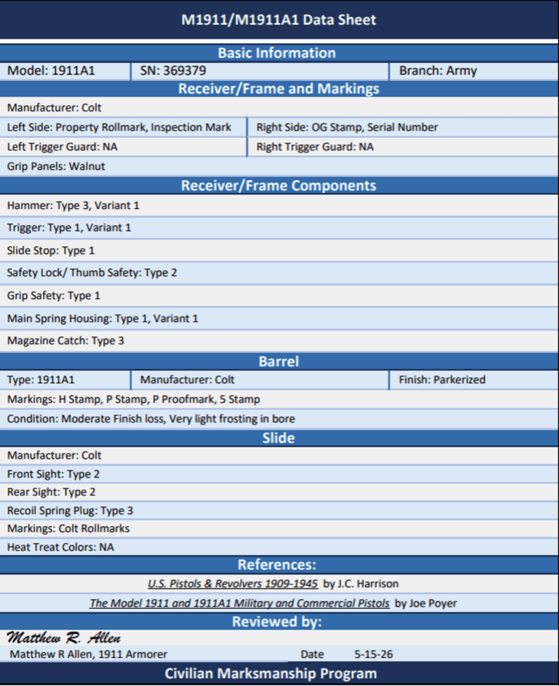

Colt M1911
Serial Number 369379
CMP-documented Colt M1911 service pistol with Colt frame, Colt slide, Colt H/P barrel, Eagle Head S14 inspection mark, walnut grips, and Ogden Arsenal OG rebuild stamp.

Collector Grade
Serial number 369379 is a Colt M1911 service pistol documented by CMP with a Colt frame, Colt slide, Colt barrel, Eagle Head S14 inspection mark, walnut grips, and OG arsenal rebuild stamp. The OG mark identifies Ogden Arsenal rebuild or inspection history.
This pistol should not be presented as untouched factory-original condition. It is best classified as a historically significant U.S. military arsenal rebuild retaining Colt frame, Colt slide, and Colt barrel features.
Evidence Gallery
pending upload
pending upload
pending upload
pending upload
pending upload
Why This Pistol Matters
Serial number 369379 is historically important because it represents a WWI-era Colt M1911 that remained in U.S. military service long enough to receive Ogden Arsenal processing. That makes it a useful bridge between early M1911 production, military service life, arsenal rebuild programs, and modern CMP release.
For the 1911 Database, this pistol is valuable as a CMP-documented Colt OG rebuild reference. It helps collectors understand how legitimate arsenal rebuilds can retain important original Colt features while showing official military refurbishment marks.
Component Review
| Frame | Colt frame documented by CMP and owner notes. Left side retains United States Property mark and Eagle Head S14 inspection mark. Right side shows serial number 369379 and OG rebuild stamp. |
| Inspection Mark | Eagle Head with S14 inspector mark documented on the left side. |
| Rebuild Mark | OG stamp documented on the right side, indicating Ogden Arsenal rebuild or inspection. |
| Trigger Guard Marks | CMP sheet lists left trigger guard NA and right trigger guard NA. |
| Grips | Walnut grips documented by CMP and owner description, with wear consistent with service use. |
| Slide | Colt slide documented by CMP and owner notes. Slide has expected Colt rollmarks and H proof mark on the rear above the firing pin stop plate. |
| Barrel | Colt 1911A1 barrel documented by CMP. Markings include H stamp, P stamp, P proofmark, and S stamp. Owner notes Colt barrel with H and P on top and P proofmark on left leg. |
| Bore | Moderate finish loss and very light frosting in bore noted. Rifling present throughout per owner description. |
| Finish | Military parkerized finish with some wear. CMP notes moderate finish loss and very light bore frosting. |
| Hammer | Type 3, Variant 1 per CMP sheet. |
| Trigger | Type 1, Variant 1 per CMP sheet. |
| Slide Stop | Type 1 per CMP sheet. |
| Thumb Safety | Safety lock/thumb safety Type 2 per CMP sheet. |
| Grip Safety | Type 1 per CMP sheet. |
| Mainspring Housing | Type 1, Variant 1 per CMP sheet. |
| Magazine Catch | Type 3 per CMP sheet. |
| Recoil Spring Plug | Type 3 per CMP sheet. |
| Sights | Front sight Type 2 and rear sight Type 2 per CMP sheet. |
| Magazine | Magazine markings not yet documented. |
Configuration Scorecard
Preliminary overall configuration score: 54/60. This score reflects a CMP-documented Colt OG arsenal rebuild, not an untouched factory-original pistol.
Production Marker
Serial number 369379 falls in WWI-era Colt M1911 production and is best treated as an early U.S. service pistol later processed through Ogden Arsenal.
Production and Historical Context
WWI Colt Production
This pistol represents early Colt M1911 U.S. Army production rather than WWII M1911A1 production.
Eagle Head S14
The Eagle Head S14 inspection mark is an important WWI-era Colt receiver feature documented on the left side.
OG Arsenal Rebuild
The OG stamp identifies Ogden Arsenal rebuild or inspection history, showing continued military service beyond initial manufacture.
CMP Documentation
The CMP data sheet was reviewed by Matthew R. Allen, 1911 Armorer, and dated 15 MAY 2026.
Provenance Timeline
WWI Era
Manufactured by Colt as a Model of 1911 U.S. Army service pistol.
Military Service
Remained in U.S. military inventory through later service periods.
Ogden Arsenal
Processed through Ogden Arsenal, as indicated by the OG stamp.
CMP
Documented by CMP with a detailed M1911/M1911A1 data sheet.
Archive
Recorded in the 1911 Database as a CMP-documented Colt OG rebuild example.
Open Documentation Items
- Upload right-side photo as 369379-right.jpg.
- Upload left-side photo as 369379-left.jpg.
- Upload Colt slide rollmark close-up as 369379-slide.jpg.
- Upload serial/OG close-up as 369379-serial-og.jpg.
- Upload barrel H/P close-up as 369379-barrel.jpg.
- Document magazine baseplate and spine markings.
Research Notes
Research method: This record separates CMP-documented observations from collector conclusions. The OG stamp changes the classification from factory-original condition to official military arsenal rebuild history.
The current assessment is based on the CMP data sheet and owner-submitted notes describing a Colt frame, Colt slide, Colt barrel, Eagle Head S14 inspection mark, OG rebuild stamp, walnut grips, military finish wear, and very light bore frosting with rifling present.